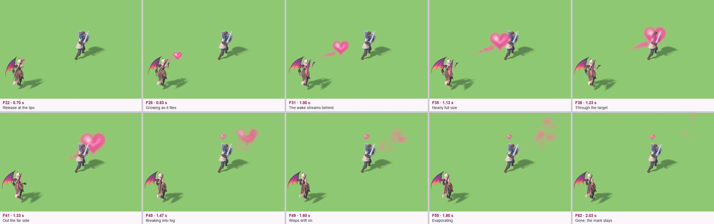
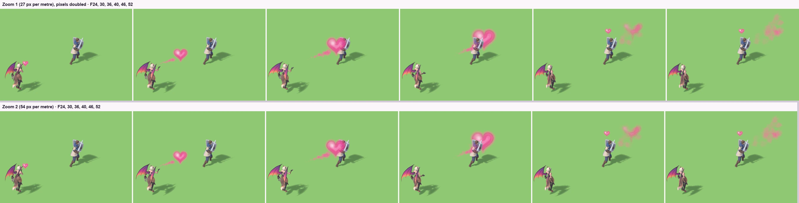
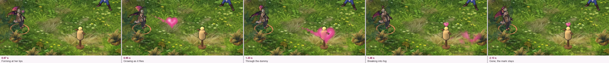
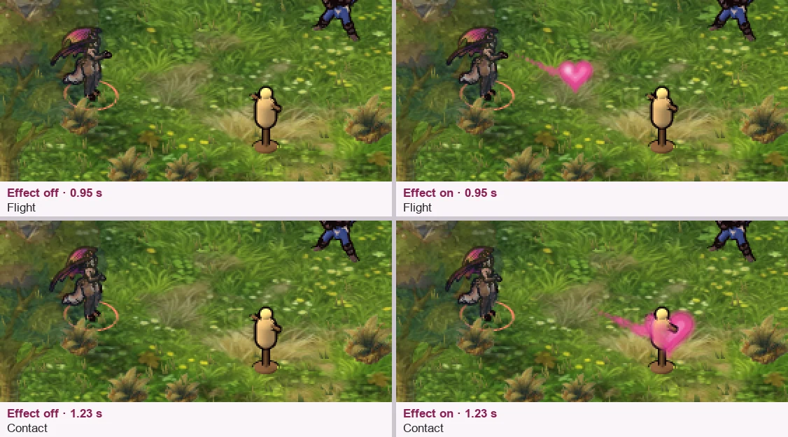
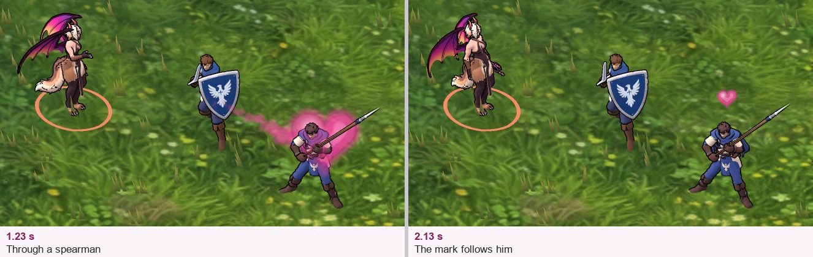

Meridius / Succubus–German squad / Approved visual direction
Sovereign Kiss
A blown kiss becomes a large heart of pink fog. It flows through opponents, enthralls them, then grows thinner and evaporates beyond the formation.
The pink fog rework

The illustrated positions show one continuous moving fog heart. The painted gather pose is expressive reference: the production gesture uses the free right hand while the left hand keeps the whip lowered.
Pink-fog ability icon
A heart made of vapor
The heart remains the dominant shape. Puckered lips explain the cast, while ragged smoke edges and see-through gaps convey the new fog treatment. Pink carries the spell identity.
Opaque square source artwork with no text or baked button border. The small-size surrounds are illustrative. Final game-camera and UI checks remain for implementation.
Download recommended icon
Pass through, then evaporate
Contact does not consume the projectile. Density follows travel progress, while each opponent's enthrall marker follows that target's actual status.

A practical Blender pass
Use a hidden heart envelope to shape layered smoke, animate noise and density, and release edge wisps into world space. Keep the two lobes and cleft readable early, then let the silhouette dissolve. The rig now has a pucker shape and a lip socket (see Cast clip).
Read the complete animation handoff for rig setup, frames, fog layers, passage timing, interruption rules, per-target deduplication and game export considerations.
Cast clip in Blender
The cast is animated on the succubus rig from your “Blow A Kiss” Mixamo clip, with a puckered mouth, a lip socket and the release event at frame 22 (0.70 s). It stays a local Blender file because it is made from a Mixamo clip. The fog heart it releases is below.
Kiss_Pucker and Exhale shape keys close and then round the painted mouth. KissSocket sits on the head at the lips, with the release point 0.12 m ahead.
kiss_releaseChecked
- Her hips and legs hold idle's first pose, so her feet stay planted (0 mm drift).
- Every bone starts and ends within 0.7° of idle's first pose; both shape keys are 0 at both ends.
- At the kiss her fingertips are 8 mm in front of the socket. They press at most 3 mm into her lower lip at frame 14.
- The wings never cross her head or kissing arm, in all frames of both clips. The wing tips trail by 2–4 frames, and the tail follows her chest 3–5 frames later.
- The attack's lash stays hidden. The whip is rolled in her fist where its coil would cut into her.
Not done yet
- Godot: the clip and its events are exported for the 3D sandbox only, into the ignored
local/folder (see In the sandbox). The face keys are not: her Godot model has no shape keys. - From the player side (facing up-right) her kissing hand is hidden behind her head, so the fog heart has to carry the cast there.
Fog heart in Blender
Following your reference, the heart starts small at her lips, grows as it flies, passes through the target and dissolves into pink fog beyond it. It is a study in the same local Blender file, keyed from the cast's release at frame 22. It now also runs in the game's 3D sandbox (below).
kiss_release (F22, 0.70 s), leaving with a breath of pink puffs.What your reference shows
In your video the pink heart flies at 5:06.0–5:06.6, checked frame by frame at 60 fps. It appears as a small, solid hot-pink heart beside the caster. Over about 0.15 s it grows and stretches like a comet, lobes first, with a soft glow. It reaches the enemies at 5:06.25 with a bright pink-white flash (other abilities overlap there), carries on past them about 1.6 times its starting width, and fades into a purple-pink haze with a smoky trail. It lives about 0.55 s.
We took its behaviour, not its design. Ours keeps the approved fog look and grows more (from 0.25 m to 1.8 m). It flies slower, about 5 of her heights per second against the reference's 8, so the growth reads at our smaller unit size. There is no flash at contact; the wash and the mark show the hit.
The video is third-party footage, so no frames from it are in the repository.




How it is built
Every part is a camera-facing card: five for the heart, about 95 short-lived puffs for the breath, the wake and the dissolve, plus the wash and the mark. Two generated textures (a heart and a puff, stored as distance from the edge) and two materials serve them all. Each card's colour carries its density, erosion and noise seed, and the material cuts the shape with moving noise: crisp while dense, then eaten from the edge into holes as it dissolves. The colour bands use the approved fog palette, with a blush highlight on the upper-left lobe. The sandbox uses the same setup: camera-facing quads with one shader driven by the same three values. The frames and seconds are stored in the Blender file for the game.
Checked
- It is keyed from the cast's
kiss_releasemarker (F22). - At the game's zoom 1 it is about 7 px wide leaving her lips, 32 px at the target (two thirds of a footman's height) and 49 px at its largest. It reads at zoom 1 and zoom 2.
- It reads in all three facings. Facing up-right (the player side) it forms behind her head and shows clearly once it has left (by F26).
- Running the build again replaces it cleanly (the same objects, materials and textures).
- The footman is only a stand-in: the render imports his model without saving, and his files are unchanged.
Not done yet
- The squad cast: in the handoff the whole squad blows together and their wisps join into one shared heart. This study has one caster.
- Gameplay values: range, speed, size and who is enthralled. The 5 m and 10 m/s here are study values.
Fog heart in the 3D sandbox
The heart now runs in the game's 3D sandbox, released by her real cast clip. Select the bench succubus, press 2 (or click Sovereign Kiss) and click a foe or a dummy within 6 m. The 0.25x time button shows it in slow motion. It is a view only: the kiss has no gameplay effect yet.
local/ folder, because it is made from a Mixamo clip. Without that file she offers only the whip. The succubus squads keep the whip.kiss_breath (0.53 s, five frames before the release) and the heart leaves her lips at kiss_release (0.70 s). If she is hit, killed or stopped before the release, nothing flies.





Checked
- A unit test checks that the kiss lands once, on its target, 0.45–0.58 s after the release; that the heart, the puffs and the wash are gone by 2 s; that the mark leaves after 4 s; that every card returns to the pool; and that a cast cut off before the release lands nothing.
- At game zoom 1 the heart is about 20 px wide in flight and about 40 px at contact. Its main pink over grass measures about
#F078B0, near the palette's#FF82C2. - With the effect hidden, the same cast plays the same way; the effect changes nothing else.
- The beats match the Blender study's: forming, growing, passing through, dissolving, the mark left behind.
Not done yet
- Gameplay: no enthrall and no damage. Only the aimed target is marked, not everyone the heart passes, and the 4 s mark is a placeholder.
- Her mouth does not move:
Kiss_PuckerandExhaleare not in her Godot model. - The wake reads as a beaded line of small puffs rather than a soft streak.
- The squad cast with one shared heart, and the battle view outside the sandbox.
Earlier directions and provenance
The user approved the pink-fog schematic on 24 October 2026. The first solid-heart treatment is superseded. A first Higgsfield icon was rejected for an unwanted “8%” measurement annotation and smooth rendering. New icon prompts contain no margin measurements.
Earlier solid-heart schematic · Earlier Warcraft A exploration · Initial ImageGen icon · Rejected Higgsfield take


The schematic was edited with built-in ImageGen from the first painted board, preserving the supplied character identity. Revised icons use Higgsfield Nano Banana Pro with Unlimited enabled. The SVG and handoff were authored locally. No gameplay, Blender scene or UI binding has changed.
The cast clip (26 October 2026) is built by the scripts in projects/meridius/source/godot/art/succubus_3d/tools/ (kiss_rig.py, retarget_clips.py, kiss_motion.py, then the wing, tail and whip passes). The resulting Blender file stays local: see that folder's README.
The fog heart (26 October 2026) is built into the same local file by kiss_heart.py and rendered by render_kiss_heart.py, in the same folder. Its motion follows the user's reference video; the reference frames stay in the repository's ignored local/video-refs/ folder.
The sandbox version (26 October 2026): export_kiss_godot.py, in the same folder, exports the cast and the two shape textures. The effect is prototypes/sandbox3d/scripts/kiss_fx3d.gd with shaders/fog_heart.gdshader; the captures come from the sandbox's --shots=kiss.
Source and review record · Schematic edit prompt · Icon B prompt · Unused alternate prompt